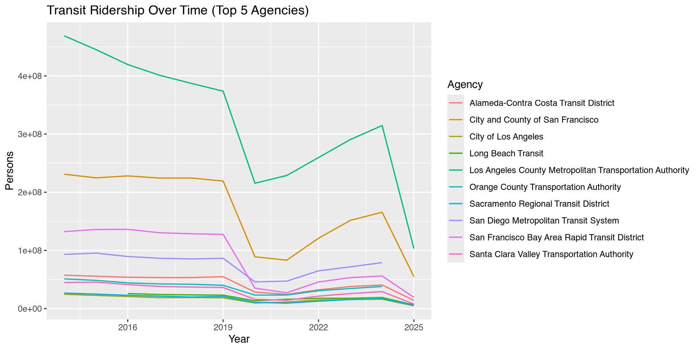
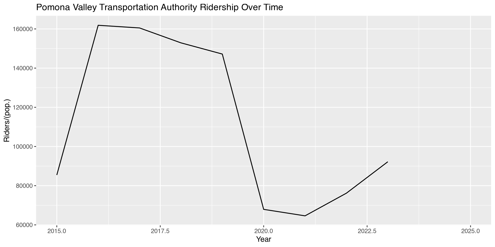
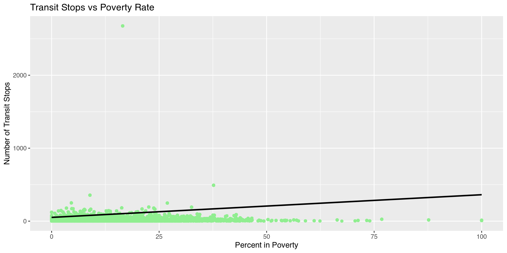
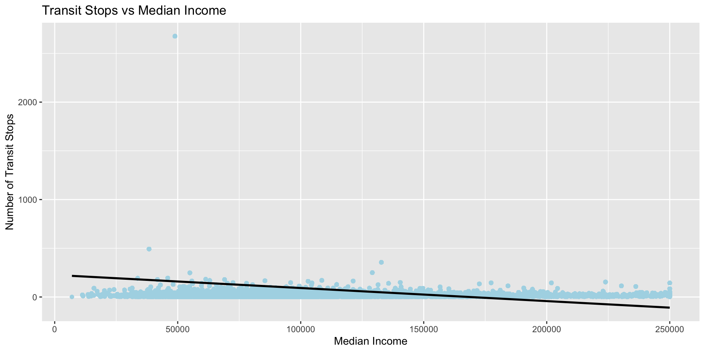
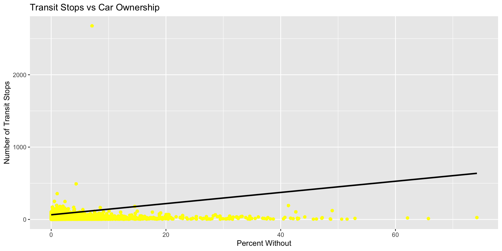
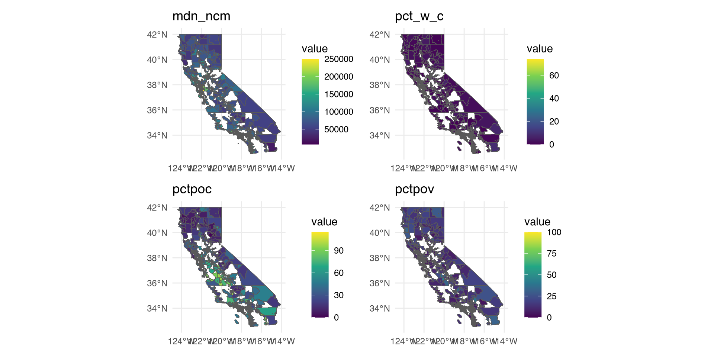
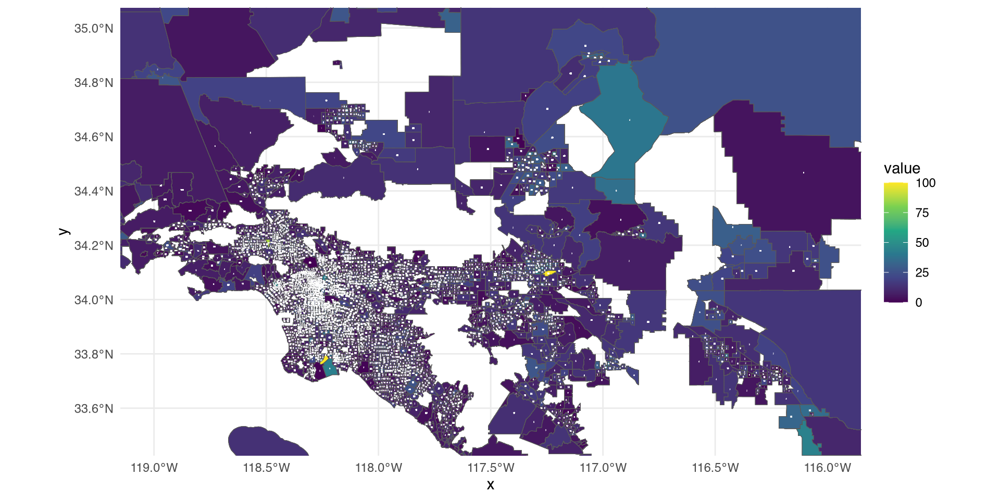

# A tibble: 1 × 75
NTD.ID Agency Organization.Type Mode Type.of.Service
<dbl> <chr> <chr> <chr> <chr>
1 90044 City of Arcadia County or Local Govern… DR PT
# ℹ 70 more variables: Rail..True.False. <lgl>,
# Primary.UZA.UACE.Code <dbl>, Primary.UZA.Name <chr>,
# Primary.UZA.Sq.Miles <dbl>, Primary.UZA.Population <dbl>,
# Service.Area.Sq.Miles <dbl>, Service.Area.Population <dbl>,
# Year <dbl>, Month <chr>, Month_Year..timestamp. <dbl>,
# VOMS <dbl>, Vehicle.Revenue.Miles <dbl>,
# Vehicle.Revenue.Hours <dbl>, Unlinked.Passenger.Trips <dbl>, …CA Public Transportation
Public Transportation in Urbn Planning
Public Transit is a Key factor in shaping how a city/society functions
- Reduces Traffic Congestion and Pollution (sustainability)
- Increases access to Jobs, Education, Healthcare, etc.
- Impacts Housing affordability and community equity
Public Transportation in Urbn Planning
Useful Analyses include:
Trends in ridership over time
Efficiency: Cost per rider or mile
Equity: Who uses transit? Where is/isn’t transit accessible?
What types of variables should we look for in a dataset/sets to conduct these useful analyses?
Dataset: National Transit Database (NTD)
- Data is filtered from US data -> CA specific Data
. . .
. . .
Discuss:
- What are the variables?
- What kinds of questions can we ask?
Wrangling Example
Goal: Compare Agencies Ridership over time
. . .
. . .
What does summary look like?
Visualizing with ggplot2
Let’s look at the agencies with the top 5
tot_pass
. . .

Your Turn
Work With a partner/group to:
- Filter data for specific Agency -> “Pomona Valley Transit Authority”
- Create line plot of
tot_passover time
summary |>
filter(Agency == "Pomona Valley Transportation Authority") |>
ggplot(aes(x = Year, y = tot_pass)) +
geom_line(linewidth = 0.6) +
labs(
title = "Pomona Valley Transportation Authority Ridership Over Time",
y = "Riders/(pop.)",
x = "Year"
)
New Dataset: California Transit Stops
- Each row is a public transit stop in California.
. . .
# A tibble: 5 × 8
agency stop_id stop_name routetypes
<chr> <chr> <chr> <chr>
1 City of Bellflower 2623823 Bellflower Blvd & Somerset Blvd 3
2 City of Bellflower 2623825 Bellflower Blvd and Rosencrans Ave 3
3 City of Bellflower 2623826 Bellflower Blvd-St. Johns High School 3
4 City of Bellflower 2623827 Woodruff Ave & Foster Rd 3
5 City of Bellflower 2623828 Woodruff Ave & Arthurdale St 3
n_arrivals n_hours_in GEOID geometry
<dbl> <dbl> <chr> <POINT [°]>
1 10 10 06037554101 (-118.1252 33.89693)
2 0 0 06037554106 (-118.1252 33.90181)
3 0 0 06037553201 (-118.1252 33.90624)
4 10 10 06037553202 (-118.1168 33.9095)
5 0 0 06037553202 (-118.1168 33.90573)Variables
Similar to previous dataset:
- Agency
. . .
New:
- stop_name/id
- routetype
- geomotry?
. . .
This dataset is stored as a shapefile.
What Is a Shapefile?
A shapefile is a special type of dataset used to:
- Store geographic information
- Plot points, lines, or areas on a map
- Perform spatial joins and analysis
What Can this Data Tell Us?
On its own, this data shows:
- Where stops are located
- How many stops an agency operates
- How often stop is used/How many routes serve a stop
. . .
What the data doesn’t show is:
- Who lives near a certain stop
- What the area is like demographically
- Whether transit access is equitable
- What causes someone to take transit
Adding Context
. . .
A common data wrangling practice used to connect datasets that share a common variables is called joining
- We can use functions like
right_join()orleft_join()to connect ourstop_datato a dataset with socioeconomic identifiers.
Adding Context
- Each stop in our
stop_datais connected to aGEOID - In our census data, each
GEOIDhas information on the areas demographics and socioeconomic indicators
. . .
This means we can join these 2 datasets on the variable
GEOID!
Right Join vs. Left Join
Let’s Compare our resulting datasets after using the functions
left_join()andright_join()
right_joined <- census_data |>
right_join(stop_data |> st_drop_geometry(), by = "GEOID")
right_joinedSimple feature collection with 132779 features and 28 fields
Geometry type: MULTIPOLYGON
Dimension: XY
Bounding box: xmin: -124.4407 ymin: 32.53419 xmax: -114.1312 ymax: 42.0095
Geodetic CRS: NAD83
First 10 features:
GEOID totl_pp tt_wrkr mdn_ncm avg_cmm pctpoc pctpov pct_w_c
1 06001400100 3094 1525 250001 33.2 25.82418 4.330963 2.747253
2 06001400100 3094 1525 250001 33.2 25.82418 4.330963 2.747253
3 06001400100 3094 1525 250001 33.2 25.82418 4.330963 2.747253
4 06001400100 3094 1525 250001 33.2 25.82418 4.330963 2.747253
5 06001400100 3094 1525 250001 33.2 25.82418 4.330963 2.747253
6 06001400100 3094 1525 250001 33.2 25.82418 4.330963 2.747253
7 06001400100 3094 1525 250001 33.2 25.82418 4.330963 2.747253
8 06001400100 3094 1525 250001 33.2 25.82418 4.330963 2.747253
9 06001400100 3094 1525 250001 33.2 25.82418 4.330963 2.747253
10 06001400200 2093 1065 225880 28.8 24.98806 7.835643 4.538939
pct_tr_ STATEFP COUNTYF TRACTCE GEOIDFQ NAME NAMELSA
1 3.199741 06 001 400100 1400000US06001400100 4001 Census Tract 4001
2 3.199741 06 001 400100 1400000US06001400100 4001 Census Tract 4001
3 3.199741 06 001 400100 1400000US06001400100 4001 Census Tract 4001
4 3.199741 06 001 400100 1400000US06001400100 4001 Census Tract 4001
5 3.199741 06 001 400100 1400000US06001400100 4001 Census Tract 4001
6 3.199741 06 001 400100 1400000US06001400100 4001 Census Tract 4001
7 3.199741 06 001 400100 1400000US06001400100 4001 Census Tract 4001
8 3.199741 06 001 400100 1400000US06001400100 4001 Census Tract 4001
9 3.199741 06 001 400100 1400000US06001400100 4001 Census Tract 4001
10 9.077879 06 001 400200 1400000US06001400200 4002 Census Tract 4002
MTFCC FUNCSTA ALAND AWATER INTPTLA INTPTLO
1 G5020 S 6945855 0 +37.8676563 -122.2318813
2 G5020 S 6945855 0 +37.8676563 -122.2318813
3 G5020 S 6945855 0 +37.8676563 -122.2318813
4 G5020 S 6945855 0 +37.8676563 -122.2318813
5 G5020 S 6945855 0 +37.8676563 -122.2318813
6 G5020 S 6945855 0 +37.8676563 -122.2318813
7 G5020 S 6945855 0 +37.8676563 -122.2318813
8 G5020 S 6945855 0 +37.8676563 -122.2318813
9 G5020 S 6945855 0 +37.8676563 -122.2318813
10 G5020 S 586560 0 +37.8481378 -122.2495916
agency stop_id
1 Alameda-Contra Costa Transit District 51147
2 Alameda-Contra Costa Transit District 50402
3 Alameda-Contra Costa Transit District 50991
4 University of California, Berkeley lawrhall_ib
5 University of California, Berkeley lawrhall
6 University of California, Berkeley spacelab_d
7 University of California, Berkeley spacelab_a
8 University of California, Berkeley botagard_ib
9 University of California, Berkeley botagard
10 Alameda-Contra Costa Transit District 55903
stop_name routetypes n_arrivals n_hours_in
1 261 Tunnel Rd 3 5 5
2 Bentley School 3 1 1
3 Centennial Dr & Parking Lot 3 10 10
4 Lawrence Hall of Science 3 23 13
5 Lawrence Hall of Science 3 23 13
6 Space Sciences Lab / MSRI 3 23 13
7 Space Sciences Lab / MSRI (Arrival) 3 23 13
8 UC Botanical Garden 3 0 0
9 UC Botanical Garden 3 0 0
10 Claremont Av & College Av 3 5 3
district_n geometry
1 04 - Bay Area / Oakland MULTIPOLYGON (((-122.2469 3...
2 04 - Bay Area / Oakland MULTIPOLYGON (((-122.2469 3...
3 04 - Bay Area / Oakland MULTIPOLYGON (((-122.2469 3...
4 04 - Bay Area / Oakland MULTIPOLYGON (((-122.2469 3...
5 04 - Bay Area / Oakland MULTIPOLYGON (((-122.2469 3...
6 04 - Bay Area / Oakland MULTIPOLYGON (((-122.2469 3...
7 04 - Bay Area / Oakland MULTIPOLYGON (((-122.2469 3...
8 04 - Bay Area / Oakland MULTIPOLYGON (((-122.2469 3...
9 04 - Bay Area / Oakland MULTIPOLYGON (((-122.2469 3...
10 04 - Bay Area / Oakland MULTIPOLYGON (((-122.2579 3...left_joined <- census_data |>
left_join(stop_data|> st_drop_geometry(), by = "GEOID")
left_joinedSimple feature collection with 133752 features and 28 fields
Geometry type: MULTIPOLYGON
Dimension: XY
Bounding box: xmin: -124.482 ymin: 32.52951 xmax: -114.1312 ymax: 42.0095
Geodetic CRS: NAD83
First 10 features:
GEOID totl_pp tt_wrkr mdn_ncm avg_cmm pctpoc pctpov pct_w_c
1 06001400100 3094 1525 250001 33.2 25.82418 4.330963 2.747253
2 06001400100 3094 1525 250001 33.2 25.82418 4.330963 2.747253
3 06001400100 3094 1525 250001 33.2 25.82418 4.330963 2.747253
4 06001400100 3094 1525 250001 33.2 25.82418 4.330963 2.747253
5 06001400100 3094 1525 250001 33.2 25.82418 4.330963 2.747253
6 06001400100 3094 1525 250001 33.2 25.82418 4.330963 2.747253
7 06001400100 3094 1525 250001 33.2 25.82418 4.330963 2.747253
8 06001400100 3094 1525 250001 33.2 25.82418 4.330963 2.747253
9 06001400100 3094 1525 250001 33.2 25.82418 4.330963 2.747253
10 06001400200 2093 1065 225880 28.8 24.98806 7.835643 4.538939
pct_tr_ STATEFP COUNTYF TRACTCE GEOIDFQ NAME NAMELSA
1 3.199741 06 001 400100 1400000US06001400100 4001 Census Tract 4001
2 3.199741 06 001 400100 1400000US06001400100 4001 Census Tract 4001
3 3.199741 06 001 400100 1400000US06001400100 4001 Census Tract 4001
4 3.199741 06 001 400100 1400000US06001400100 4001 Census Tract 4001
5 3.199741 06 001 400100 1400000US06001400100 4001 Census Tract 4001
6 3.199741 06 001 400100 1400000US06001400100 4001 Census Tract 4001
7 3.199741 06 001 400100 1400000US06001400100 4001 Census Tract 4001
8 3.199741 06 001 400100 1400000US06001400100 4001 Census Tract 4001
9 3.199741 06 001 400100 1400000US06001400100 4001 Census Tract 4001
10 9.077879 06 001 400200 1400000US06001400200 4002 Census Tract 4002
MTFCC FUNCSTA ALAND AWATER INTPTLA INTPTLO
1 G5020 S 6945855 0 +37.8676563 -122.2318813
2 G5020 S 6945855 0 +37.8676563 -122.2318813
3 G5020 S 6945855 0 +37.8676563 -122.2318813
4 G5020 S 6945855 0 +37.8676563 -122.2318813
5 G5020 S 6945855 0 +37.8676563 -122.2318813
6 G5020 S 6945855 0 +37.8676563 -122.2318813
7 G5020 S 6945855 0 +37.8676563 -122.2318813
8 G5020 S 6945855 0 +37.8676563 -122.2318813
9 G5020 S 6945855 0 +37.8676563 -122.2318813
10 G5020 S 586560 0 +37.8481378 -122.2495916
agency stop_id
1 Alameda-Contra Costa Transit District 51147
2 Alameda-Contra Costa Transit District 50402
3 Alameda-Contra Costa Transit District 50991
4 University of California, Berkeley lawrhall_ib
5 University of California, Berkeley lawrhall
6 University of California, Berkeley spacelab_d
7 University of California, Berkeley spacelab_a
8 University of California, Berkeley botagard_ib
9 University of California, Berkeley botagard
10 Alameda-Contra Costa Transit District 55903
stop_name routetypes n_arrivals n_hours_in
1 261 Tunnel Rd 3 5 5
2 Bentley School 3 1 1
3 Centennial Dr & Parking Lot 3 10 10
4 Lawrence Hall of Science 3 23 13
5 Lawrence Hall of Science 3 23 13
6 Space Sciences Lab / MSRI 3 23 13
7 Space Sciences Lab / MSRI (Arrival) 3 23 13
8 UC Botanical Garden 3 0 0
9 UC Botanical Garden 3 0 0
10 Claremont Av & College Av 3 5 3
district_n geometry
1 04 - Bay Area / Oakland MULTIPOLYGON (((-122.2469 3...
2 04 - Bay Area / Oakland MULTIPOLYGON (((-122.2469 3...
3 04 - Bay Area / Oakland MULTIPOLYGON (((-122.2469 3...
4 04 - Bay Area / Oakland MULTIPOLYGON (((-122.2469 3...
5 04 - Bay Area / Oakland MULTIPOLYGON (((-122.2469 3...
6 04 - Bay Area / Oakland MULTIPOLYGON (((-122.2469 3...
7 04 - Bay Area / Oakland MULTIPOLYGON (((-122.2469 3...
8 04 - Bay Area / Oakland MULTIPOLYGON (((-122.2469 3...
9 04 - Bay Area / Oakland MULTIPOLYGON (((-122.2469 3...
10 04 - Bay Area / Oakland MULTIPOLYGON (((-122.2579 3...Right Join vs. Left Join
left_join(): Keep all rows from the left (census_data), attach matching rows from rightright_join(): Keep all rows from the right (stop_data), attach matching left values
. . .
➡️ Use left_join() if you want every census area, even if it has no stop
➡️ Use right_join() if you want every transit stop
We want to keep every transit stop,even in GEOIDS with multiple stops, meaning we must use right_join()
. . .
Simple feature collection with 132779 features and 28 fields
Geometry type: MULTIPOLYGON
Dimension: XY
Bounding box: xmin: -124.4407 ymin: 32.53419 xmax: -114.1312 ymax: 42.0095
Geodetic CRS: NAD83
First 10 features:
GEOID totl_pp tt_wrkr mdn_ncm avg_cmm pctpoc pctpov pct_w_c
1 06001400100 3094 1525 250001 33.2 25.82418 4.330963 2.747253
2 06001400100 3094 1525 250001 33.2 25.82418 4.330963 2.747253
3 06001400100 3094 1525 250001 33.2 25.82418 4.330963 2.747253
4 06001400100 3094 1525 250001 33.2 25.82418 4.330963 2.747253
5 06001400100 3094 1525 250001 33.2 25.82418 4.330963 2.747253
6 06001400100 3094 1525 250001 33.2 25.82418 4.330963 2.747253
7 06001400100 3094 1525 250001 33.2 25.82418 4.330963 2.747253
8 06001400100 3094 1525 250001 33.2 25.82418 4.330963 2.747253
9 06001400100 3094 1525 250001 33.2 25.82418 4.330963 2.747253
10 06001400200 2093 1065 225880 28.8 24.98806 7.835643 4.538939
pct_tr_ STATEFP COUNTYF TRACTCE GEOIDFQ NAME NAMELSA
1 3.199741 06 001 400100 1400000US06001400100 4001 Census Tract 4001
2 3.199741 06 001 400100 1400000US06001400100 4001 Census Tract 4001
3 3.199741 06 001 400100 1400000US06001400100 4001 Census Tract 4001
4 3.199741 06 001 400100 1400000US06001400100 4001 Census Tract 4001
5 3.199741 06 001 400100 1400000US06001400100 4001 Census Tract 4001
6 3.199741 06 001 400100 1400000US06001400100 4001 Census Tract 4001
7 3.199741 06 001 400100 1400000US06001400100 4001 Census Tract 4001
8 3.199741 06 001 400100 1400000US06001400100 4001 Census Tract 4001
9 3.199741 06 001 400100 1400000US06001400100 4001 Census Tract 4001
10 9.077879 06 001 400200 1400000US06001400200 4002 Census Tract 4002
MTFCC FUNCSTA ALAND AWATER INTPTLA INTPTLO
1 G5020 S 6945855 0 +37.8676563 -122.2318813
2 G5020 S 6945855 0 +37.8676563 -122.2318813
3 G5020 S 6945855 0 +37.8676563 -122.2318813
4 G5020 S 6945855 0 +37.8676563 -122.2318813
5 G5020 S 6945855 0 +37.8676563 -122.2318813
6 G5020 S 6945855 0 +37.8676563 -122.2318813
7 G5020 S 6945855 0 +37.8676563 -122.2318813
8 G5020 S 6945855 0 +37.8676563 -122.2318813
9 G5020 S 6945855 0 +37.8676563 -122.2318813
10 G5020 S 586560 0 +37.8481378 -122.2495916
agency stop_id
1 Alameda-Contra Costa Transit District 51147
2 Alameda-Contra Costa Transit District 50402
3 Alameda-Contra Costa Transit District 50991
4 University of California, Berkeley lawrhall_ib
5 University of California, Berkeley lawrhall
6 University of California, Berkeley spacelab_d
7 University of California, Berkeley spacelab_a
8 University of California, Berkeley botagard_ib
9 University of California, Berkeley botagard
10 Alameda-Contra Costa Transit District 55903
stop_name routetypes n_arrivals n_hours_in
1 261 Tunnel Rd 3 5 5
2 Bentley School 3 1 1
3 Centennial Dr & Parking Lot 3 10 10
4 Lawrence Hall of Science 3 23 13
5 Lawrence Hall of Science 3 23 13
6 Space Sciences Lab / MSRI 3 23 13
7 Space Sciences Lab / MSRI (Arrival) 3 23 13
8 UC Botanical Garden 3 0 0
9 UC Botanical Garden 3 0 0
10 Claremont Av & College Av 3 5 3
district_n geometry
1 04 - Bay Area / Oakland MULTIPOLYGON (((-122.2469 3...
2 04 - Bay Area / Oakland MULTIPOLYGON (((-122.2469 3...
3 04 - Bay Area / Oakland MULTIPOLYGON (((-122.2469 3...
4 04 - Bay Area / Oakland MULTIPOLYGON (((-122.2469 3...
5 04 - Bay Area / Oakland MULTIPOLYGON (((-122.2469 3...
6 04 - Bay Area / Oakland MULTIPOLYGON (((-122.2469 3...
7 04 - Bay Area / Oakland MULTIPOLYGON (((-122.2469 3...
8 04 - Bay Area / Oakland MULTIPOLYGON (((-122.2469 3...
9 04 - Bay Area / Oakland MULTIPOLYGON (((-122.2469 3...
10 04 - Bay Area / Oakland MULTIPOLYGON (((-122.2579 3...Exploring: Poverty & Transit Access
Now that we have out datasets combined, we can start exploring the relationships between our stop data and our census data.
. . .
Q: How does
pctpov(percent in poverty) relate to the number of transit stops in a neighborhood?
Exploring: Poverty & Transit Access
full_data <- full_data |>
group_by(GEOID)|>
summarize(stop_count = n(),
pctpov = first(pctpov),
pctpoc = first(pctpoc),
mdn_ncm = first(mdn_ncm),
pct_w_c = first(pct_w_c))
full_data|>
ggplot(aes(x = pctpov, y = stop_count)) +
geom_point(color = "lightgreen") +
geom_smooth(method = "lm", se = FALSE, color = "black") +
labs(title = "Transit Stops vs Poverty Rate",
x = "Percent in Poverty",
y = "Number of Transit Stops") +
theme_grey()
Exploring: Median Income & Transit Access
Q: Do higher-income areas have more or fewer transit stops?
. . .

One more!
Q: Do areas where more people don’t own cars have better transit coverage?
. . .

Exploration Questions
These plots highlight the equity of the CA Public Transit System.
Why might these practices be important in areas Outside of CA?
Visualization 2.0
With our Data we want to Show…
- Where Transit Stops Are Located
- Which areas are affected by socioeconomic Factors
- Correlation between transit stop access and socioeconomic status
. . .
For this task, We can use a Spatial Heat Map to visualize the overlap between the two areas
Spatial Heat Maps
- Census Data Automatically Contains the
geometry, or placement on a map, for each GEOID - Stop Data places the stop inside each GEOID at its (lat,long) cord.
- We can Visualize the socioeconomic factors through colors on the map
. . .
Our Goal: Create a Map of CA, divided into GEOID’s, that compares transit stop frequency to socioeconomic factors

